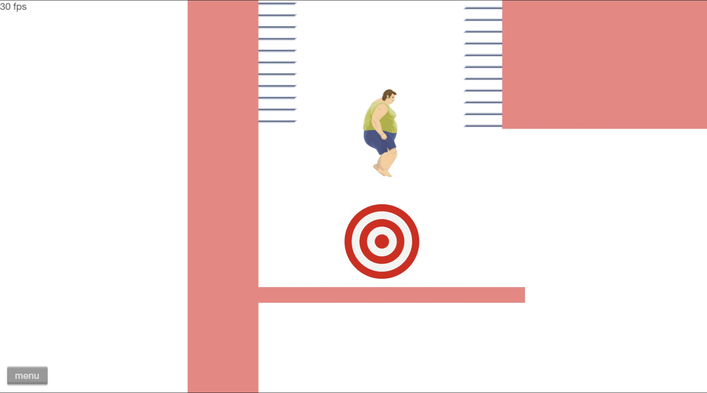

Other Projects
Super Smash Wheels

This is one of those projects where I said it doesn't seem to have anything to do with game development, but does contribute to my game dev knowledge. Basically, I wanted to bring Super Smash Bros into Happy Wheels (hence the name), but more specifically I wanted to bring in Break the Targets from older Smash Bros titles, such as SSB Melee. I was on and off with this project for about 3 years due to the overall complexity of implementing the game mechanics using what the Happy Wheels level editor has to offer, such as the trigger tool for programming movement, connecting one system to another, and overall game logic. Over this level's development, I changed my approach to solving these problems multiple times, mostly because the overall system became a nightmare to actually build and manage.
I can't guarantee that the mechanics will work perfectly, due to the nature of Happy Wheels physics. But I hope you can see what I was going for! This is a published level, and you can play it by clicking on the following link: https://totaljerkface.com/happy_wheels.tjf?level_id=10742872